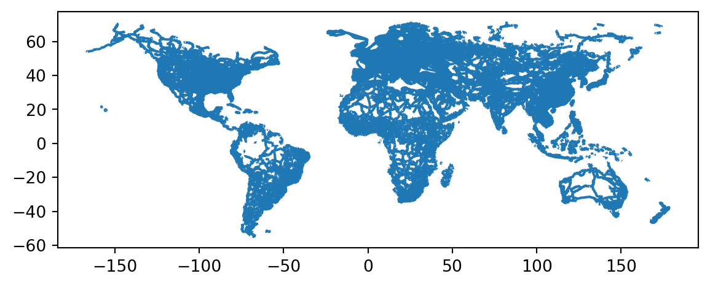

import os
import geopandas as gpd
import pandas as pd
import matplotlib.pyplot as plt
# this is our first time using this function
from shapely.geometry import box15 Reprojecting & Clipping
In this lesson we will learn how to change the CRS of a geopandas.GeoDataFrame and how to clip different geometries using a polygon in a geopandas.GeoDataFrame. Through doing these operations we will create the following map of roads and populated places in Alaska:
15.1 Data
We will use three datasets in this lesson.
First dataset The first dataset is a TIGER shapefile from the United States Census Bureau.
We will use the shapefiles for the US states. Follow these steps to download shapefile with the United States’ states:
- At the bottom of the 2022 page, under Download, click on “Web Interface”
- For year, select 2022, and for layer type select “States (and equivalent)”. Click submit.
- Click on “Download national file”.
You can check the metadata for all the TIGER shapefiles here. The columns for this shapefile are:

Second dataset The second dataset we’ll use is Natural Earth’s simple medium scale populated places dataset. We can obtain this dataset by downloading the shapefile (choose the one that says “simple (less columns)”).
Third dataset The third dataset we’ll use is Natural Earth’s road dataset. We can obtain this dataset by downloading the shapefile
Move all datasets to a directory named “data” inside your working directory.
15.2 Import data
Let’s start by loading our libraries and then importing the datasets we’ll use.
# display all columns when looking at dataframes
pd.set_option("display.max.columns", None)
# ----- IMPORT DATA -----
# states from US Census TIGER files
states = gpd.read_file(os.path.join('data','tl_2022_us_state','tl_2022_us_state.shp'))
# make column names small caps
states.columns = states.columns.str.lower()
# populated places from Natural Earth
places = gpd.read_file(os.path.join('data','ne_50m_populated_places_simple','ne_50m_populated_places_simple.shp'))
# roads from Natural Earth
roads = gpd.read_file(os.path.join('data','ne_10m_roads','ne_10m_roads.shp'))15.3 Prepare Alaska polygon
15.3.1 Exploration
Let’s start by taking taking a look at our stats geo-dataframe. Since this is a geospatial dataset, exploration should include at least checking the head of the dataset, plotting the data, and looking at its CRS.
# print the CRS
print(states.crs)
# look at first five columns
states.head(3)EPSG:4269| region | division | statefp | statens | geoid | stusps | name | lsad | mtfcc | funcstat | aland | awater | intptlat | intptlon | geometry | |
|---|---|---|---|---|---|---|---|---|---|---|---|---|---|---|---|
| 0 | 3 | 5 | 54 | 01779805 | 54 | WV | West Virginia | 00 | G4000 | A | 62266456923 | 489045863 | +38.6472854 | -080.6183274 | POLYGON ((-77.75438 39.33346, -77.75422 39.333... |
| 1 | 3 | 5 | 12 | 00294478 | 12 | FL | Florida | 00 | G4000 | A | 138962819934 | 45971472526 | +28.3989775 | -082.5143005 | MULTIPOLYGON (((-83.10874 24.62949, -83.10711 ... |
| 2 | 2 | 3 | 17 | 01779784 | 17 | IL | Illinois | 00 | G4000 | A | 143778515726 | 6216539665 | +40.1028754 | -089.1526108 | POLYGON ((-87.89243 38.28285, -87.89334 38.282... |
states.plot()<Axes: >
15.3.2 Selection
For this lesson, we are intersted in plotting data in Alaska. Let’s start by selecting this data:
# select Alaska from states
alaska = states[states.name =='Alaska']
alaska.plot()<Axes: >15.3.3 Reprojecting
As in our previous lesson, we bump into the issue of Alaska’s islands elongating the map. To fix this, we will reproject the Alaska geo-dataframe. Reprojecting means precisely this, changing the coordinate reference system of your geospatial data. In our case we will reproject the Alaska geo-dataframe to the CRS EPSG:3338. This CRS is a projected CRS, better suited for working with data from Alaska:

Changing CRSs in GeoPandas is very simple using the to_crs() method for gpd.GeoDataFrames. The general syntax is:
updated_geodf = geodf.to_crs(new_crs)where:
updated_geodfis the output of the method, a new geodataframe (to_crs()does not work in place),geodfis thegpd.GeoDataFramewe want to transform,new_crsan object of type CRS or string representing the CRS (ex:'epsg:3338'), the CRS we want to convert to.
In our case:
# change to projected CRS optimized for Alaska
alaska = alaska.to_crs('epsg:3338')
alaska.plot()<Axes: ># check new CRS
print('is this CRS projected? ', alaska.crs.is_projected)
alaska.crsis this CRS projected? True<Projected CRS: EPSG:3338>
Name: NAD83 / Alaska Albers
Axis Info [cartesian]:
- X[east]: Easting (metre)
- Y[north]: Northing (metre)
Area of Use:
- name: United States (USA) - Alaska.
- bounds: (172.42, 51.3, -129.99, 71.4)
Coordinate Operation:
- name: Alaska Albers (meters)
- method: Albers Equal Area
Datum: North American Datum 1983
- Ellipsoid: GRS 1980
- Prime Meridian: Greenwich15.4 Prepare populated places
15.4.1 Exploration
Let’s now explore the populated places data.
# print the CRS
print(places.crs)
# look at first five columns
places.head(3)EPSG:4326| scalerank | natscale | labelrank | featurecla | name | namepar | namealt | nameascii | adm0cap | capalt | capin | worldcity | megacity | sov0name | sov_a3 | adm0name | adm0_a3 | adm1name | iso_a2 | note | latitude | longitude | pop_max | pop_min | pop_other | rank_max | rank_min | meganame | ls_name | min_zoom | ne_id | geometry | |
|---|---|---|---|---|---|---|---|---|---|---|---|---|---|---|---|---|---|---|---|---|---|---|---|---|---|---|---|---|---|---|---|---|
| 0 | 10 | 1 | 5 | Admin-1 region capital | Bombo | None | None | Bombo | 0 | 0 | None | 0 | 0 | Uganda | UGA | Uganda | UGA | Bamunanika | UG | None | 0.583299 | 32.533300 | 75000 | 21000 | 0.0 | 8 | 7 | None | None | 7.0 | 1159113923 | POINT (32.53330 0.58330) |
| 1 | 10 | 1 | 5 | Admin-1 region capital | Fort Portal | None | None | Fort Portal | 0 | 0 | None | 0 | 0 | Uganda | UGA | Uganda | UGA | Kabarole | UG | None | 0.671004 | 30.275002 | 42670 | 42670 | 0.0 | 7 | 7 | None | None | 7.0 | 1159113959 | POINT (30.27500 0.67100) |
| 2 | 10 | 1 | 3 | Admin-1 region capital | Potenza | None | None | Potenza | 0 | 0 | None | 0 | 0 | Italy | ITA | Italy | ITA | Basilicata | IT | None | 40.642002 | 15.798997 | 69060 | 69060 | 0.0 | 8 | 8 | None | None | 7.0 | 1159117259 | POINT (15.79900 40.64200) |
places.plot()<Axes: >This dataset has CRS EPSG:4326, this is the EPSG code for the WGS84 CRS. This is not surprise since this is a global dataset, and EPSG:4326/WGS84 is the most used CRS for such data.
Let’s see what happens when we try to plot this data on top of Alaska:
# Trouble
fig, ax = plt.subplots()
alaska.plot(ax=ax)
places.plot(ax=ax, color='red')
plt.show()
Data in weird places? Check your CRSs
This is a classic mistake in analysis. To plot, analyze, or integrate different geospatial datasets they must have the same CRS.
Here, alaska and places have different CRSs, leading to unexpected results when plotting them together:
print(alaska.crs)
print(places.crs)epsg:3338
EPSG:432615.4.2 Reprojecting
Reprojecting the places geo-datafarme into alaska’s CRS is simple using to_crs():
# update crs
places = places.to_crs(alaska.crs)
print(alaska.crs == places.crs)TrueLet’s check that map again:
fig, ax = plt.subplots()
alaska.plot(ax=ax)
places.plot(ax=ax, color='red', markersize=2 )
plt.show()
This is better: we can see there is the Alaska poygons and some points on top of it. Our next step is to select these points.
15.4.3 Clipping
Clipping means using a polygon (or polygons) to only select geospatial data within them. Clipping a gpd.GeoDataFrame is easy using the geopandas clip() function. The general syntax is:
updated_geodf = gpd.clip(geodf, mask)where:
updated_geodfis the output of the method: the intersection of the geometries ingeodfwithmask,geodfis thegpd.GeoDataFramewe want to clip,maskis agpd.GeoDataFramewith the polygon(s) we want to use for clipping. Thismaskmust be in the same CRS asgeodf!
In our case:
# clip places to Alaska
ak_places = gpd.clip(places, alaska)
print('Number of places in AK:', len(ak_places))Number of places in AK: 12# plot populated places in Alaska
fig, ax = plt.subplots()
alaska.plot(ax=ax)
ak_places.plot(ax=ax, color='red')
plt.show()
15.5 Prepare roads
15.5.1 Exploration
Now we move on to our roads dataset.
# print the CRS
print(roads.crs)
# look at first five columns
roads.head(3)EPSG:4326| scalerank | featurecla | type | sov_a3 | note | edited | name | namealt | namealtt | routeraw | question | length_km | toll | ne_part | label | label2 | local | localtype | localalt | labelrank | ignore | add | rwdb_rd_id | orig_fid | prefix | uident | continent | expressway | level | min_zoom | min_label | geometry | |
|---|---|---|---|---|---|---|---|---|---|---|---|---|---|---|---|---|---|---|---|---|---|---|---|---|---|---|---|---|---|---|---|---|
| 0 | 8 | Road | Secondary Highway | CAN | None | Version 1.5: Changed alignment, a few adds in ... | None | None | None | None | 0 | 3 | 0 | ne_1d4_original | None | None | None | None | None | 0 | 0 | 0 | 0 | 0 | None | 314705 | North America | 0 | None | 7.1 | 9.6 | LINESTRING (-133.32533 62.21571, -133.31664 62... |
| 1 | 7 | Road | Secondary Highway | USA | None | Version 1.5: Changed alignment, a few adds in ... | 83 | None | None | None | 0 | 164 | 0 | ne_1d4_original | None | None | None | None | None | 0 | 0 | 0 | 0 | 0 | None | 108105 | North America | 0 | Federal | 7.0 | 8.6 | LINESTRING (-100.50543 42.80753, -100.53495 42... |
| 2 | 7 | Road | Secondary Highway | USA | None | Version 1.5: Changed alignment, a few adds in ... | 840 | None | None | None | 0 | 98 | 0 | ne_1d4_original | None | None | None | None | None | 0 | 0 | 0 | 0 | 0 | None | 0 | North America | 0 | U/C | 7.0 | 9.5 | LINESTRING (-87.27432 36.02439, -87.22916 35.9... |
roads.plot()<Axes: >
15.5.2 One-liner clipping
You may have already noticed that roads is not in the same CRS as alaska, so these geo-datasets shound’t interact until they’re in the same CRS. Before jumping right into reprojecting and clipping, we will subset the data to select only US roads:
# select US roads only
usa_roads = roads[roads.sov_a3 == 'USA']
usa_roads.plot()<Axes: >
Reduce your tabular data before reducing via geometries
Geospatial operations are usually costly. The more detailed our geometries the longer in takes to do geospatial computations. It’s a good practice to try to reduce your data as much as possible before applying any geospatial transformation.
We will now do a “one-liner” to clip usa_roads using the alaska polygon. Notice we are using the ouput of usa_roads.to_crs(alaska.crs) and thus not changing the usa_roads geo-dataframe or creating new variables:
# clip usa_roads to alaska geometry
ak_roads = gpd.clip(usa_roads.to_crs(alaska.crs),alaska)
ak_roads.plot()<Axes: >Notice how the lines break on the small islands? However in the usa_roads there are no broken lines. This should make us suspect we are leaving data out and clipping exactly to the polygons in alaska is not quite what we want.
15.5.3 Clipping with bounding box
We will clip the usa_roads geo-dataframe with the bounding box of alaska instead of its polygons. To create a bounding box, we first use the box() function we imported from shapely.geometry. The syntax for box() is:
box(minx, miny, maxx, maxy)the output is a X representing a box constructed like this:
If we want to create a shapely polygon from the bounds of a geo-dataframe gdf, a more straightforward syntax is:
box(*gdf.total_bounds)In our case:
bbox = box(*alaska.total_bounds)
print(type(bbox))
bbox<class 'shapely.geometry.polygon.Polygon'>* as unpacking operator
In the last syntax we are using the asterisk * as an unpacking operator on the array gdf.total_bounds. Think about it as unpacking the elements of gdf.total_bounds and assigning them one-by-one to the paremeters minx, miny, maxx, maxy of box().
This is a good article explaining more about unpacking with * in Python: https://geekflare.com/python-unpacking-operators/
# create geo-dataframe from bounding box
ak_bbox = gpd.GeoDataFrame(geometry = [bbox], # assign geometry column
crs = alaska.crs) # assign CRS
print(type(ak_bbox))
ak_bbox<class 'geopandas.geodataframe.GeoDataFrame'>| geometry | |
|---|---|
| 0 | POLYGON ((1493082.309 404545.108, 1493082.309 ... |
We can now clip the roads using Alaska’s bounding box:
ak_complete_roads = gpd.clip(usa_roads.to_crs(ak_bbox.crs), ak_bbox)
ak_complete_roads.plot()<Axes: >Notice the difference between the two clipping methods:
# two rows, one column
fig, (ax1, ax2) = plt.subplots(2, 1, figsize=(10,10))
ak_roads.plot(ax=ax1)
ax1.set_title('Roads clipped with AK multipolygon')
ak_complete_roads.plot(ax=ax2)
ax2.set_title('Roads clipped with AK bounding box')
#plt.axis('equal')
plt.show()
15.6 Plot
Finally, we can put all our data together in the same map:
# https://matplotlib.org/stable/api/markers_api.html
# Trouble: not in the same CRS
# this is cool! but now we are seeing all Arctic comms
fig, ax = plt.subplots(figsize=(12,8))
# --------------------------
ax.axis('off')
alaska.plot(ax=ax, color='none', edgecolor='0.7')
ak_complete_roads.plot(ax=ax, column='type', legend=True)
#ak_comms.plot(ax=ax, color='red')
ak_places.plot(ax=ax, color='red', marker='s')
# --------------------------
plt.show()/Users/galaz-garcia/anaconda3/envs/mpc-env/lib/python3.11/site-packages/geopandas/plotting.py:732: FutureWarning: is_categorical_dtype is deprecated and will be removed in a future version. Use isinstance(dtype, CategoricalDtype) instead
if pd.api.types.is_categorical_dtype(values.dtype):